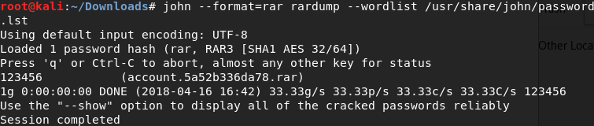
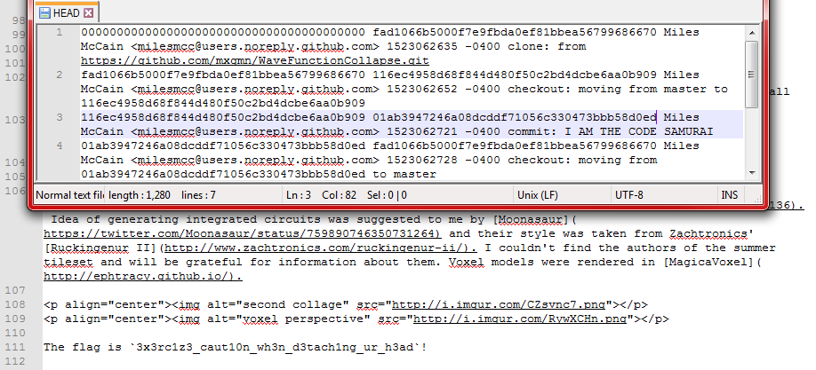
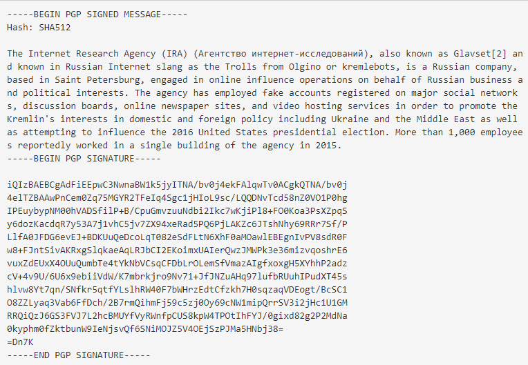
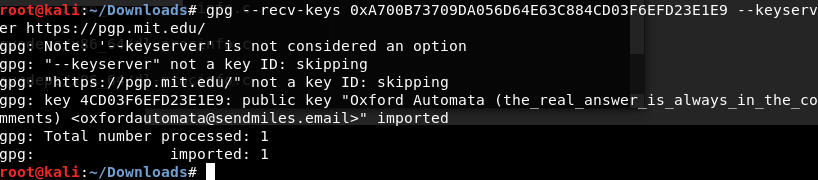
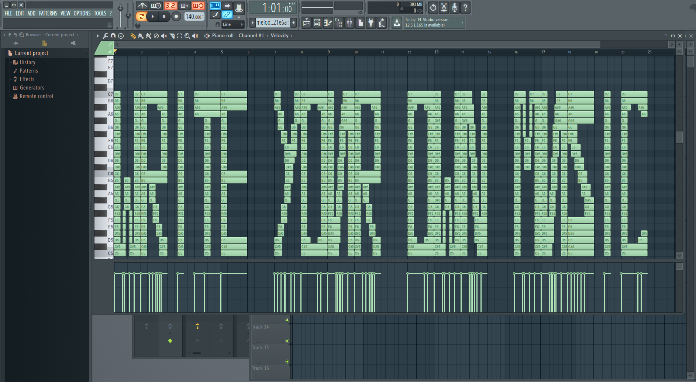
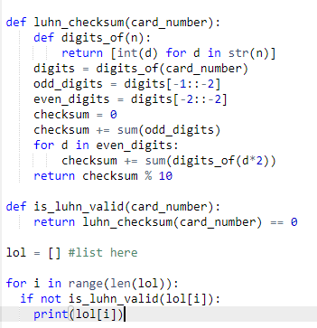
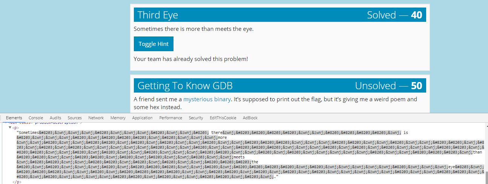
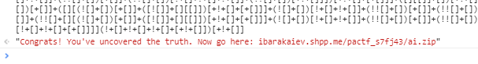

Easy. Open in a Text Editor.
Answer: flag_is_DjKVIXXQRZZrrAd
Cipher: ny_nx_tsq3_zumnqq_kwtr_mjwj_68a6e9c57d
Simple Caeser Cipher with numbers added to alphabet (Shift +5)
Answer: it_is_only_uphill_from_here_1351947028
Cipher: 5:6 1139:4 1620:3 172:4
Classic Book Cipher, the text can be found here. Look up the words by [line:word] and you get "the answer is Cassius".
Answer: Cassius
File: account.rar
Hint: Something tells me the user might not be using complex passwords…
Proceed to bruteforce with John the Ripper!

Password = 123456
Answer: rgSueiMYehWJSZPZr
File: go_git_it
Hint: Perhaps ‘chopping a branch off a tree’ would be the more precise analogy.
This one was pretty difficult and required some research on Git branches and navigation.
After adding the folder as a local repository, looking through the .git files shows a HEAD files with previous commits. So all I had to do was go back to the branch of "THE CODE SAMURAI" using a Git Shell.
(git checkout 01ab3947246a08dcdd71056c33047bbb58d0ed)

The flag is found in the README.md file.
Answer:
3x3rc1z3_caut10n_wh3n_d3tach1ng_ur_h3ad

Hint: Keys live on keyservers.
A lot of research for a very simple problem.
Basically find the public key on PGP key servers matching the RSA key using GPG on Kali.

Answer: the_real_answer_is_always_in_the_comments
File: melody.mid
Hint: How would you edit MIDI?
Super easy, not sure why worth this many points.
I used FL Studio 12 and opened up the notes in piano roll.

Answer: write your own music
Looking at previous CTFs, one of them has the query "i*pactf*e".
Simply look up "pactf" on same page.
Answer: pactf-flag-4boxdpa21ogonzkcrs9p.com
File: cc.bz2
Look up how credit cards are validated using the Luhns algorithm.
The last digit of a credit card is a check number based on all the other digits. So I found a python script that will check all the values of the list.

Answer: 8692015931457397
Looking at the source code gives you a bunch of empty-space characters.

Changing \&8203; to 0 and \ to 1, you get a binary code.
(
01110111011010000110000101110100010111110110010101101100011100110110010101011111011011000111010101110010011010110111001101011111011000100110010101101110011001010110000101110100011010000101111101110100011010000110010101011111011001010111100101100101)
This code is 248 bits long and can be converted into bytes. So changing binary to ASCII will get you the flag.
Answer: what_else_lurks_beneath_the_eye
Cipher: Tązhii, Łį́į́ʼ, Dzeeh Mąʼii, Dibé yázhí, Wóláchííʼ, Tłʼízí Tin, Dibé Mósí, Łį́į́ʼ, Dzeeh, Dibé, Tązhii, Dzeeh, Gah, Neeshchʼííʼ, Dzeeh, Béésh dootłʼizh
Look up a Navajo dictionary because there isn't a translator.
After translating, you get:
turkey, horse, elk
coyote(fox), lamb, ant, goat
ice, sheep
cat, horse, elk, sheep, turkey, elk, rabbit, nut, elk, zinc
Reading the first letter of each word gives you - the flag is chesternez.
Answer: chesternez
File: PDF
We get a PDF with black bars over some text. Simply copy and paste the redacted parts will give you the flag.
Answer: b3_car3ful_0r_y0ur_l3ak_m1ght_l3ak
MD5: eca065fba51916821eb7274c786c67d9
MD5 is not secure. Use https://crackstation.net/ to do a lookup.
Answer: lmaoez
Easy again. Open in a Text Editor.
Answer: big_brother_is_looking_at_your_photos
We get a Russian key and this is a Straddle Checkerboard Cipher.
Translating the text tells you what is the cipher and what is the key. The answer is "do it by hand" in Russian.
Answer:
сделайте_эmо_вручную
We get a
Source
file and this is obfuscated Javascript.
Running the code in a console will get you:

This gets you a zip file with HTML/JS files in it. Looking through the script.js file, there is a launch_artificial_intelligence(stupid) function and a get_key_number(n, arr) function.
Using the Chrome browser you can type the launch function with false as the parameter to get a cool animation. The get_key_number function is not implemented.
Instead of implementing the function, you can calculate from the six values the maximum value of [16, 23, 16, 15, 42, 8]. The logic was meant to confuse and waste time.
We plug in the number 120 into http://ibarakaiev.shpp.me/pactf_s7fj43/key_%d.txt.
Lastly, we get a cipher - "mrxwozAp" encoded in custom ASCII. Change the decimal values into binary and we get 0110010001101111011001110110011101101111.
Answer: doggo